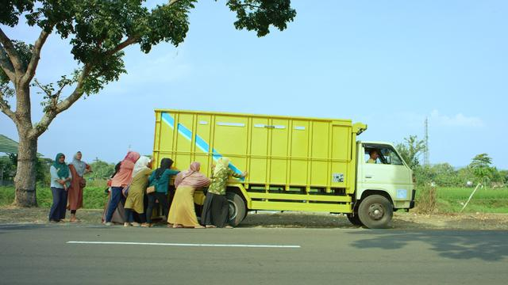
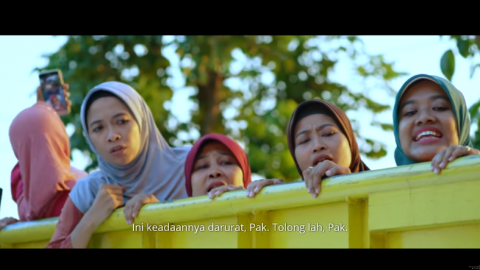

Sinopsis
Film pendek ini bercerita tentang rombongan ibu-ibu yang menaiki truk untuk pergi menjenguk Bu Lurah yang sedang dirawat di rumah sakit. Di sepanjang perjalanan diisi oleh ocehan dari Bu Tejo yang tidak henti mengumbar gosip tentang Dian, kembang desa yang cantik dan mandiri. Dengan luwesnya, Bu Tejo membeberkan berbagai hal yang seolah dianggap fakta bahwa Dian, calon menantu Bu Lurah itu perempuan tidak beres, dan bisa meresahkan warga, terutama keutuhan rumah tangga, karena dicurigai sering menggoda para lelaki yang sudah berkeluarga. Dasar yang dikemukakan oleh Bu Tejo ialah berita-berita di media sosial yang memuat tentang Dian. Namun, tidak semua yang disampaikan Bu Tejo itu diterima begitu saja, sebab ada yang mengingatkan yakni Yu Ning, bahwa tidak elok menelan informasi mentah-mentah tanpa mengetahui keakuratan sumbernya. Bu Tejo pun tidak peduli, ia terus melancarkan gosip keburukan Dian, apalagi ada salah seorang yang menyokong. Klimaksnya, terjadi perang mulut antara Bu Tejo dengan Yu Ning yang ternyata memang famili Dian.
Setelah rombongan sampai rumah sakit, kedatangan mereka disambut langsung oleh Dian dan Fikri. Namun, Dian menyayangkan kedatangan para tetangganya itu, sebab Bu Lurah masih berada di ruang perawatan intensif (ICU), belum boleh dijenguk oleh siapa pun. Mendengar informasi ini, Bu Tejo langsung membalas dengan cibirian kepada Yu Ning yang menjadi inisiator tilik, tetapi belum berbekal informasi akurat tentang kondisi Bu Lurah. Di akhir cerita, selepas rombongan ibu-ibu pulang dari rumah sakit lantaran tidak jadi menjenguk Bu Lurah, digambarkan Dian memasuki mobil sedan yang di dalamnya telah duduk seorang lelaki paruh baya yang dipanggil dengan sapaan "Mas". Kepada lelaki itu, Dian menumpahkan kegelisahan dan mengungkapkan, sebenarnya tak sanggup lagi menjalani hubungan sembunyi-sembunyi dan ingin menikah, juga kekhawatirannya, sanggupkah Fikri menerima kenyataan bila mengetahui ayahnya akan menikah dengannya.

Resensi
Tilik (bahasa Indonesia: Menjenguk) adalah sebuah film pendek berbahasa Jawa yang diproduksi oleh Ravacana Films. Tilik merupakan salah satu film pendek yang lolos kurasi dana istimewa Dinas Kebudayaan Provinsi Daerah Istimewa Yogyakarta pada 2018. Film yang disutradarai oleh Wahyu Agung Prasetyo dan berdasarkan pada sebuah skenario buatan Bagus Sumartono tersebut dirilis pada September 2018.[1] Pada 17 Agustus 2020, Ravacana Films merilis Tilik di kanal berbagi video YouTube secara gratis untuk khalayak umum. Tilik berkisah tentang serombongan ibu-ibu yang pergi menggunakan truk untuk menjenguk Bu Lurah mereka yang sedang dirawat di rumah sakit.

Berikut trailer clip dari film Tilik. Selamat menonton!